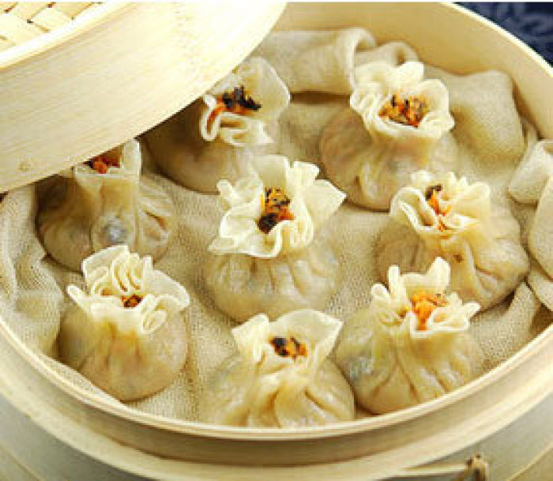
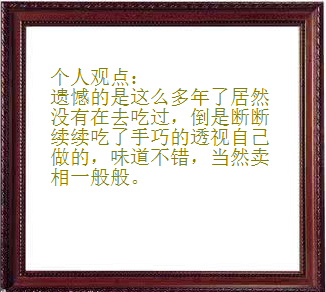
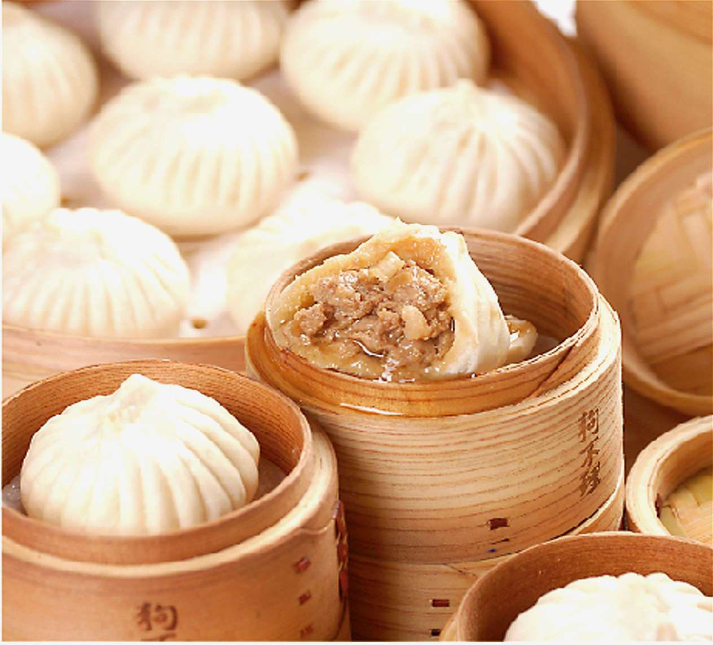
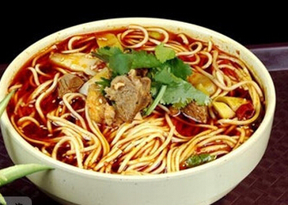
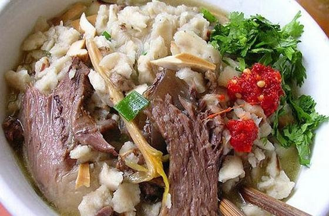
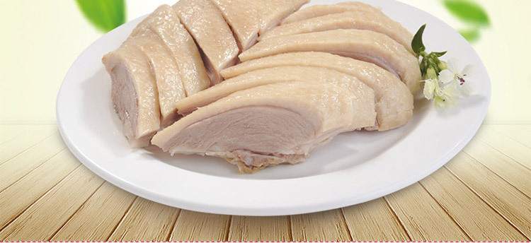
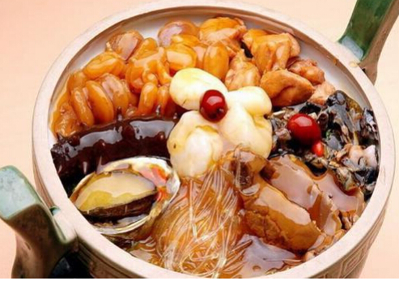

都一处烧麦

都一处烧麦馆坐落在繁华的前门大街38号，始建于乾隆三年(1738年)，距今已有250年的历史，是北京有名的百年老店之一。烧麦顶上需捏出18个褶，就像绽放的花朵一样美丽。


天津狗不理包子

狗不理包子简称狗不理，起源于天津，是全国闻名的天津市汉族传统风味小吃，为"天津三绝"之首，是中华老字号之一，另外两绝是“十八街麻花”和“耳朵眼炸糕”。其特点是选料精良、肥而不腻。
兰州拉面

兰州牛肉面，又称兰州清汤牛肉面，是“中国十大面条”之一,据说起源于唐代，但有史料记载始于清朝嘉庆年间。它以“汤镜者清，肉烂者香，面细者精”的独特风味和的特点，统一了兰州牛肉面的标准。
西安羊肉泡馍

羊肉泡馍是陕西著名的风味美食，尤以西安最享盛名。因它暖胃耐饥，素为西安和西北地区各族人民所喜爱，外宾来陕也争先品尝，以饱口福。牛羊肉泡馍已成为陕西名食的“总代表”。
南京桂花鸭

南京桂花鸭又名南京盐水鸭，相传已飘香2500余年，是南京一道汉族传统名菜，久负盛名。桂花鸭——皮白肉嫩、肥而不腻、香鲜味美，久食不厌，是下酒佳品，具有香、酥、嫩的特点。
佛跳墙

“佛跳墙”也叫“满坛香”和“福寿全”，佛跳墙是福州一道集山珍海味之大全的传统名菜，誉满中外，被各地烹饪界列为福建菜谱“首席菜”，至今已有百余年的历史，属闽菜系。